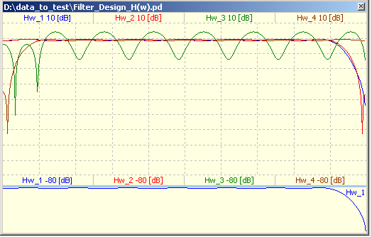
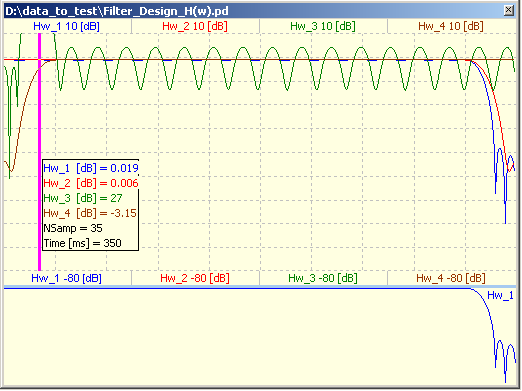
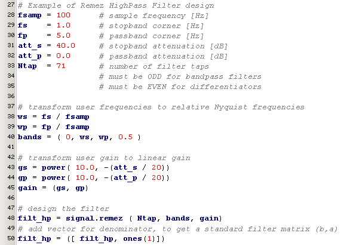

april 2007
Signal Workbench, Filter Design
Introduction
This page just contains my personal notes on filters, using SciPy (coming from MatLab).
FIR filters
+ non recursive FIR filters are inherently stable
+ roundoff noise can easily made small for non recursive FIR filters
+ can have perfect linear phase = constant group-delay = no distortion
- needs long filter lengths
- if used with an even number of taps, delay is not an integer number of samples and H(Nyquist)=0 !!
Linear phase
FIR filters having linear phase, can be divided into 4 types, depending on odd/even number of taps and symmetrical/anti-symmetrical, as defined by Rabiner and Gold in "Theory and application of digital signal processing". Some types have restrictions at the boundaries at w=0 and w=Nyquist, which can lead to serious problems when used for the wrong goal.
|
Type |
Ntap |
Symmetry |
H(0) |
H(Nyquist) |
Suited for |
|
I |
odd |
Symmetrical |
band filters |
||
|
II |
even |
Symmetrical |
H(Nyquist) = 0 |
band filters |
|
|
III |
odd |
Anti-Symmetrical |
H(0) = 0 |
H(Nyquist) = 0 |
diff / Hilbert |
|
IV |
even |
Anti-Symmetrical |
H(0) = 0 |
diff / Hilbert |
Note: MatLab help files and the Signal Toolbox manual contains many errors (about this matter)
Note: MatLab uses the filter-order, which is one less than Ntap
Effect of EVEN number of taps
For bandpass / bandstop filters problems arise when using an even number of taps, while the desired frequency response at Nyquist is not zero. For the differentiator type filter this exact the opposite, an odd number of taps might give problems.
The picture below shows the amplitude of the transfer function (in dB) of 4 different filters, all designed with remez, and having the same band and gain factors.
As expected for the LowPass filters 1 and 2 (red and blue), it doesn't matter whether you specify an odd or even number of taps. For the HighPass filter it makes a lot difference, the brown filter with an odd number of taps works as expected, while the green filter, with an even number of taps is very bad.
Note: the red lowpass filter is the exact mirror of the brown highpass filter.

It will even be come worse if we increase the number of taps to 70/71, as can be seen in the picture below.
Watch the exorbitant gain of 27 dB at 35 / 512 * fNyquist.

FIR by Remez exchange algorithm
This algorithm was developed and published by E.Ya.Remez in 1934.
T.W. Parks and J.H.McClellan wrote and published a Fortran program using the Remez exchange algorithm in 1973. That's why this algorithm is sometimes called the Parks-McClellan algorithm.
See also: http://mathworld.wolfram.com/RemezAlgorithm.html
remez (Ntap, Bands, Gains, weight=None, Hz=1, type='bandpass', maxiter=25, grid_density=16)
Calculates the minimax optimal linear phase filter (equiripple) using Remez exchange algorithm.
Ntap -- desired number of taps
always use ODD number of taps for type='bandpass'
always use EVEN number of taps for type='differentiator'
Bands -- monotonic increasing vector [0 .. 0.5], containing the band edges.
Gains -- vector specifying the gain in stop- and pass-bands (thus half as long as Bands)
weight -- optional vector specifying the weight of every gain-element, used in the optimization procedure
type -- 'bandpass' : flat response in bands or
'differentiator' : frequency proportional response in bands.
maxiter -- maximum number of iterations in the optimization procedure
grid_density --
return -- vector, specifying the numerator of the filter
MatLab: firpm (Ntap-1, Bands, GAIN, weight, type)
Note: in MatLab the filter-order is specified, which is one less than the number of taps !!
Note: in MatLab the GAIN is specified at the band-edges, instead of midpoint of the bands
Note: SciPy doesn't support Hilbert
Examples
